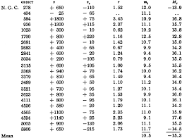

Edwin Hubble al 1929 va publicar "A relation between distance and radial velocity among extra-galactic nebulae" a la revista PNAS.
Nosaltres repetirem les dades de Hubble de la taula 1 per obtenir el gràfic de la figura 1 d'aquest article i després utilitzarem les dades del "Dark Energy Survey" que conté 1500 supernoves tipus Ia corriment al vermell alt.
L'objectiu serà calcular la velocitat d'expansió de l'univers de Hubble de 1929 i a partir de les dades del "Dark Energy Survey" i presentar-les al congrés Young Photonics.
És una estrella que ha esclatat i ha format molts elements químics com el ferro, el calci, el silici durant l'explosió, com podem veure a la pàgina web del programa js9 creat per la Universitat de Harvard i Smithsonian Institute
Si obro la pàgina web js9 automàticament s'obre la supernova Cassiopea A i si clico anàlisis i espectre puc veure les característiques dels fotons, per exemple el pic amb energia 1,7 kiloelectrons-volts és silici.
El calci dels meus ossos, el ferro de la meva sang, el silici del meu ordinador provenen d'explosions de supernoves perquè tenen prou energia per produir a partir d'elements químics lleugers com l'hidrogen o l'heli elements molt més pesats (com Fe, Si, Ca).
Les supernoves tipus Ia sempre esclaten amb la mateixa força, són candeles estàndar i es pot calcular la distància a la que es troba una galàxia si tenim la sort de detectar una supernova esclatant. Per calcular la distància comparem l'explosió estàndar amb l'explosió observada, és a dir, la magnitud absoluta de la brillantor (M) amb la magnitud aparent de la brillantor (m).
També podem calcular distàncies amb el corriment al vermell que consisteix que quan una galàxia s'allunya la llum i les línies espectrals es mouen cap a vermell.
Si observo que l'hidrogen ha de tenir una línia espectral a la Terra de 656,3 nanòmetres i en una galàxia té 700 nanòmetres perquè ha corregut el vermell la seva z o corriment és (700-656,3) : entre 656,3 igual a 0,066.
Les supernoves de tipus Ia són utilitzades com a estàndards de distància perquè tenen una brillantor màxima coneguda. Això ens permet calcular la distància a una supernova a partir de la seva magnitud observada (magnitud aparent) i la seva magnitud intrínseca (magnitud absoluta).
La fórmula que utilitzarem per calcular la distància a una supernova és:
On:
Suposem que tenim una supernova de tipus Ia amb les següents dades:
Utilitzem la fórmula per calcular la distància:
Primer calculem la diferència entre les magnituds:
A continuació, dividim per 5:
Finalment, calculem \(10\) a la potència de \(7.44\):
Multipliquem per \(10\):
Així que la distància a la supernova és aproximadament:
Una vegada que tenim la distància a la supernova, podem mesurar el desplaçament al vermell (\(z\)) de la galàxia que conté la supernova. El desplaçament al vermell es relaciona amb la velocitat de recessió de la galàxia segons:
Finalment, utilitzarem la llei de Hubble per calcular la constant de Hubble (\(H_0\)). La llei estableix: